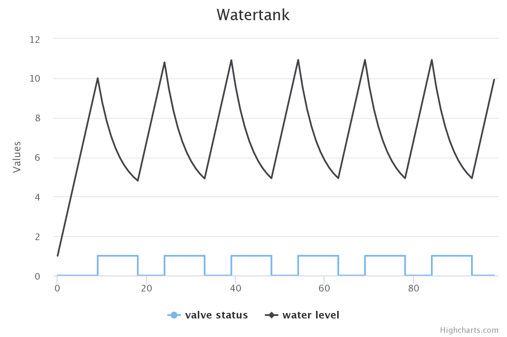

Modeling a water tank¶
This example shows a model of a small cyber-physical system consisting of a water tank with faucet and drain, and a controller opening and closing the exit valve of the drain. The model illustrates discrete-event simulation, timed semantics, and custom visualization in ABS.
The complete code can be found at https://github.com/abstools/absexamples/tree/master/collaboratory/examples/single-watertank/.
The following class shows the model of a water tank. The field level
holds the current water level, the field valve_open records the
status of an exit valve (open or not open).
The water tank has active behavior. The run method calculates the
new water level on every time tick: fillrate is always added to the
current level (water is always flowing in), and the level decreases by
drainrate * level in case the valve is open, since water pressure is
proportional to the water level.
module SingleWaterTank;
data ValveCommand = Open | Close;
interface WaterTank {
Float getLevel();
Unit valvecontrol(ValveCommand command);
[HTTPCallable] List<Pair<Int, Float>> getValveAndLevelHistory();
}
class WaterTank(Float fillrate, Float drainrate) implements WaterTank {
Float level = 0.0;
Bool valve_open = False;
List<Pair<Int, Float>> history = list[];
List<Pair<Int, Float>> getValveAndLevelHistory() { return reverse(history); }
Float getLevel() { return level; }
Unit valvecontrol(ValveCommand command) {
valve_open = command == Open;
}
Unit run() {
while (True) {
await duration(1, 1);
// Water inflow is constant, water outflow is
// proportional to the current tank level
level = level + fillrate;
if (valve_open) {
level = max(0.0, level - drainrate * level);
}
history = Cons(Pair(when valve_open then 1 else 0, level), history);
}
}
}
The tank also holds the history of current level and valve status in
the field history. The method getValveAndLevelHistory is
annotated to be callable via the The model API, and will be
used to visualize the tank level over time.
Modeling the controller¶
The task of the controller is to open and close a tank’s valve to keep
the water level in a safe range. The controller object does not have any
methods but is an active object as well. Its run method checks the
tank’s water level once per clock cycle, and sends Open and
Close commands as necessary:
interface Controller { }
class Controller(WaterTank tank, Float minlevel, Float maxlevel) implements Controller {
Unit run() {
while (True) {
Float level = await tank!getLevel();
if (level >= maxlevel) {
tank!valvecontrol(Open);
} else if (level <= minlevel) {
tank!valvecontrol(Close);
}
await duration(1, 1);
}
}
}
{
[HTTPName: "watertank"] WaterTank tank = new WaterTank(1.0, 0.2);
Controller controller = new Controller(tank, 5.0, 10.0);
}
We also see, at the bottom, the main block that creates a water tank object, makes it visible to the Model API, and creates a controller object.
Visualizing the water level over time¶
The visualization uses the Highcharts visualization library, so needs an online connection to work.
When connecting e.g. to localhost:8080, the browser will make a
connection to /call/watertank/getValveAndLevelHistory, which results
in a call to the getValveAndLevelHistory method of the water tank.
The returned data is then converted into two lists of values which are
passed to Highchart to be plotted.
<!DOCTYPE HTML>
<html>
<head>
<meta http-equiv="Content-Type" content="text/html; charset=utf-8">
<title>Watertank</title>
<script src="https://code.highcharts.com/highcharts.js"></script>
<script src="https://code.highcharts.com/modules/exporting.js"></script>
<script src="https://code.highcharts.com/modules/export-data.js"></script>
</head>
<body>
<h1>Watertank</h1>
<div id="chart-container">
</div>
</body>
<script type="text/javascript">
'use strict';
function drawChart() {
fetch("/call/watertank/getValveAndLevelHistory")
.then(response => response.json())
.then(data => {
let valvestatus = data.result.map(p => p.fst);
let waterlevel = data.result.map(p => p.snd);
Highcharts.chart('chart-container', {
type: 'line',
title: { text: 'Watertank' },
series: [
{ name: 'valve status', data: valvestatus, step: 'right' },
{ name: 'water level', data: waterlevel }
]
});
});
}
document.addEventListener("DOMContentLoaded", function () {
drawChart();
});
</script>
</html>
Running the example¶
As mentioned, the code of this example resides at
https://github.com/abstools/absexamples/tree/master/collaboratory/examples/single-watertank/.
Place the files Watertank.abs, index.html and Makefile
into the same directory and run the command make to compile and
start the model. Then, connect a browser to the URL
http://localhost:8080/ to see the resulting graph. The resulting
plot shows the water level decreasing when the valve is open, and
increasing again when the valve is closed.

Plot of water level and valve status over time¶